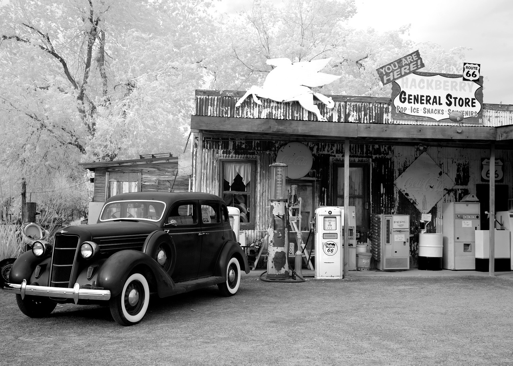

Somos una compañía global e integrada presentes en toda la cadena de valor integrando actividades de upstream y downstream. Operamos en las áreas de mayor potencial energético del mundo y contamos con uno de los sistemas de refino más eficientes de Europa.
Repsol es una de las grandes empresas energéticas privadas del mundo, con presencia en las áreas clave y de mayor potencial del mapa energético mundial.
Nuestra Historia
Tras ocho décadas de experiencia en el mundo de la energía, Repsol ha fortalecido un equipo cualificado, diverso e ilusionado para afrontar el compromiso de garantía de suministro energético.
Apostando por la innovación tecnología, la optimización de recursos, la eficiencia energética y la búsqueda de nuevas fuentes de energía sostenibles.

Objetivo
Ser el mayor productor de combustibles y sus derivados a nivel mundial, sin dejar de lado la responsabilidad social y ambiental en el mundo. Tener la red de estaciones de servicio más grande, dando el mejor servicio y manteniendo los estándares de calidad más altos del mercado.
Visión
Ser la empresa global que busca el bienestar de las personas y se anticipa en la construcción de un futuro mejor a través del desarrollo de energías ecológicas y avanzadas.